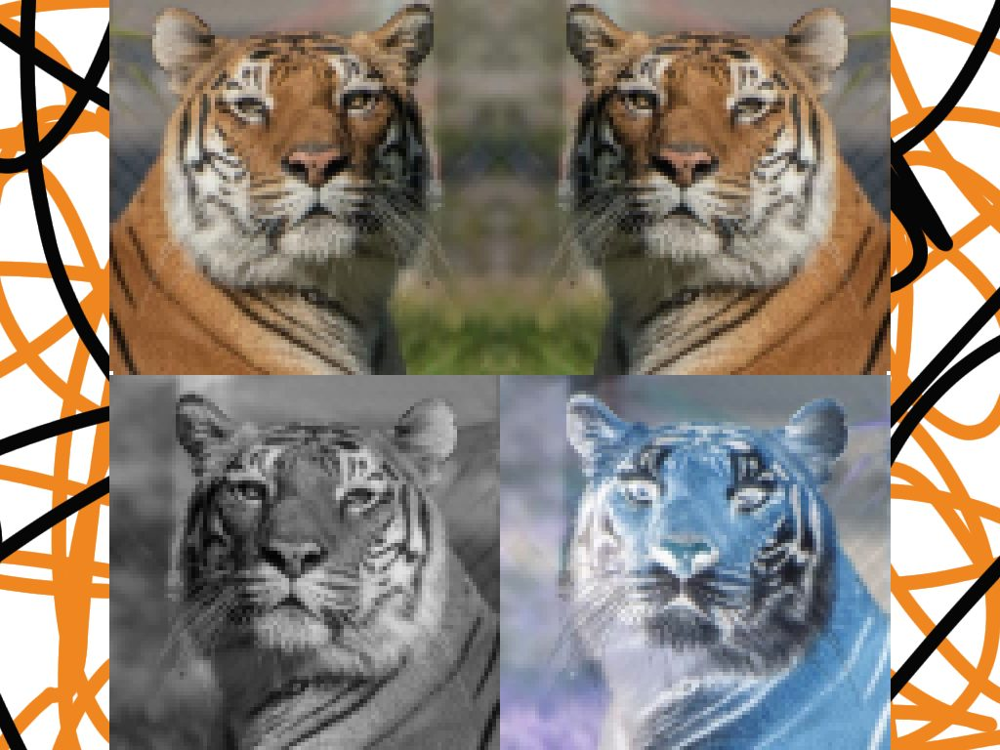

Cities Recommender

I wrote an AI program to recommend the best cities in America to live in. Cities were optimized between being safe and having favorable economic conditions (low cost of living and high median income). Machine learning was used to estimate unknown cost of living values of cities. Over 2000 cities were looked at.
Design Patterns
I created multiple Java programs based off of UMLs employing different design patterns. The patterns include: Decorator, Factory, Observer, and Strategy. This code was submitted for my software eengineering class.
Image Manipulation Expiriments
This project was made to explore how programs can perform image manipulation. I wrote a program that can open a bitmap image and store its pixel data into matrices which could then be manipulated. I was able to successfully mirror an image, invert the colors of an image, convert an image to black and white, and stretch an image programatically.
Retro Calculator

A functional recreation of an old school style calculator was made. I pushed CSS to the limit to make the calculator photorealistic. Vector images were not used as I wanted to make the calculator easier to be built upon in the future. The entire webpage is very small and takes up 14Kb.